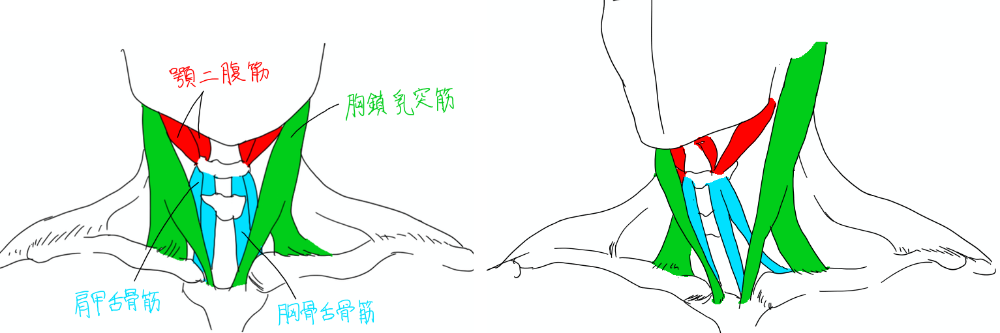

筋肉をグループ分けして覚える（頭・首・胴編）
頭、首、胴の筋肉については、似た役割の筋肉や、近い位置にある筋肉を同じグループにしています。まぁ普通の分け方です。特に言葉で説明する必要はなさそうなので一覧表の方で確認してください。
最初に顔の筋肉についてです。顔の筋肉はよく表情筋と呼ばれているもので、表面に凹凸が表れるというよりは顔面の脂肪を様々な方向に引っ張って膨らみやシワを作ることで特徴が出ます。だから顔の筋肉を学ぶときは表情の種類と照らし合わせながら勉強することになります。なので取りあえず筋肉の名称はササッと暗記してしまいましょう。グループ分けは顔のどのパーツの表情に関係しているかで考えています。

ちなみにこの記事で載せている参考図は結構はしょっている部分があるので、手元にある解剖学書と照らし合わせながら読み進めて下さい。本によっては描かれている筋肉と描かれていない筋肉があったりと、細かい部分はあまり気にしない方がいいです。今回テーマとしているのは解剖学の解説ではなくて暗記法なのでご了承ください。
| 体の部位 |
グループ名 |
筋肉の名称 |
役割 |
| 頭 |
眉・まぶたを動かす |
後頭筋（こうとうきん） |
頭皮を後方へ引っ張る。 |
| 前頭筋（ぜんとうきん） |
頭皮を前方ひ引っ張る。眉を引き上げる。 |
| 皺眉筋（しゅうびきん） |
眉間にシワを作る。 |
| 眼輪筋（がんりんきん） |
目を閉じる。 |
| 上眼瞼挙筋（じょうがんけんきょきん） |
目を開ける。 |
| 鼻を動かす |
鼻筋（びきん） |
鼻を狭める。 |
| 口を動かす |
口輪筋（こうりんきん） |
口をすぼめる。 |
| 上唇挙筋（じょうしんきょきん） |
上唇を引き上げる。 |
| 大頬骨筋（だいきょうこつきん） |
口角を引き上げる。 |
| 笑筋（しょうきん）・広頸筋（こうけいきん） |
口角を引き上げる？ |
| 頬筋（きょうきん） |
口を閉じる。頬を引き締める。 |
| 三角筋（さんかくきん） |
口角を下げる。口を閉じる。 |
| 下唇下制筋（かしんかせいきん） |
下唇を下げる。 |
| オトガイ筋 |
アゴの皮膚を引き上げる。 |
| 顎を動かす |
側頭筋（そくとうきん） |
下顎を引き上げる。 |
| 咬筋（こうきん） |
下顎を引き上げる。 |
首を描くときに注意するのは胸鎖乳突筋くらいです。単純化して描くときは鎖骨に向かってV字の線を描くのは誰でもやってますね。ただ、首の凹凸を陰影で表そうとすると他の筋肉を知ってないとのっぺりした首になってしまいます。そうするとカギとなるのは舌骨の存在です。舌骨は喉仏の位置にある軟骨で、顎から胸骨に張られた筋肉の中間にあります。顎と胸骨からこの舌骨に向かって筋肉が張られていることを意識して凹凸を表現すると生々しさが出るはずです。

| 体の部位 |
グループ名 |
筋肉の名称 |
役割 |
| 首 |
目立つ筋肉 |
胸鎖乳突筋（きょうさにゅうとつきん） |
頭を左右に回転、上を向く。目立つ筋肉。耳の後ろに付いているので収縮すると顔が上を向く。 |
| 舌骨の上側 |
顎二腹筋（がくにふくきん） |
舌骨と顎を引き上げる。顎のしゃくれ部分の下面に張った筋肉。顎と舌骨に繋がっている。 |
| 舌骨の下側 |
胸骨舌骨筋（きょうこつぜっこつきん） |
舌骨を下げる。胸鎖乳突筋の間にあり、舌骨と胸骨に繋がっている。 |
| 肩甲舌骨筋（けんこうぜっこつきん） |
舌骨を下げる。胸鎖乳突筋の間にあり、舌骨と肩甲骨に繋がっている。 |
胴の筋肉は一つ一つが大きい筋肉なので表面に表れる筋肉は少ないです。ただし、その一つ一つの形状が独特なのでデッサンするのが難しいかもしれません。筋肉の塊ではなく、凹凸の塊で考えた方が形を取りやすいと思います。特に胴体の凹凸を表す陰影の中でも、腹筋と肋骨が重なる部分のデコボコや、僧帽筋と肩甲骨の重なる部分のデコボコは複雑なので解剖学をよく理解しておきましょう。
さらに胴は首、腕、脚と連結する本体的な存在です。その連結部では複雑な筋肉の重なりが発生するので、連結部の骨格のどの部分にどの筋肉が付いているかを把握しておく必要があります。首や腕との連結部は鎖骨や肩甲骨について、脚との連結部は骨盤についてよく勉強しましょう。鎖骨エロスや脇エロスや股エロスを描くには必須ですよ。
ところで、胴の骨格について調べていて驚いたことがあるのですが、肋骨というのは生命維持器官を保護するために堅牢な防御壁を作っているのかと思ったら、実は結構可動範囲の広い作りになっていて肋骨間に張られた膜のような筋肉でオジギソウのように上下に動くらしいです。だから横隔膜で息を吸い込むと胸が大きく上に膨らむみたいです。よって人体デッサンするとき、まず肋骨のアタリ線から描き始める人は、肋骨の形は大きく変化するということを知っておかないと不自然な輪郭になるかもしれないので注意してください。

| 体の部位 |
グループ名 |
筋肉の名称 |
役割 |
| 胴 |
胴体正面 |
大胸筋（だいきょうきん） |
腕を前と下に引っ張る。脇のくぼみの前方の壁を作る。骨への付着点が多いので筋繊維の流れを知っておくべし。大胸筋の下には小胸筋などのインナーマッスルもある。 |
| 腹直筋（ふくちょくきん） |
胴を曲げる。8つのブロックに分かれて見える。 |
| 腹斜筋（ふくしゃきん） |
胴を左右に曲げる。外腹斜筋、内腹斜筋などがある。 |
| 前鋸筋（ぜんきょきん） |
肩甲骨を前方に引っ張る、つまり肩や腕をやや前方に動かす。肋骨のでこぼこに沿って付く筋肉。 |
| 胴体背面 |
広背筋（こうはいきん） |
肩や腕を後方に引っ張る。重い物を引っ張り上げたり懸垂運動をするときに動く。背中の下半分を覆う大きな筋肉。 |
| 僧帽筋（そうぼうきん） |
頭を左右に傾ける。首を伸ばす働きもあるらしいが、伸ばすというより胴体を引き下げて相対的に頭が離れているだけだと思う。肩甲骨を上下に引っ張る動きもする。背中の上半分を覆う大きな筋肉。 |
| 仙棘筋（せんきょくきん） |
背筋を伸ばす。尻を突き出す。脊椎の両サイドに沿っている筋肉で、背中中心の真っすぐな溝は丁度筋肉の膨らみがない部分が形作る。 |
| 肩甲挙筋（けんこうきょきん） |
肩甲骨を引き上げる。 |
| 菱形筋（りょうけいきん） |
肩甲骨を引き上げる。菱形のような形をしている。 |
| 肩甲骨 |
棘上筋（きょくじょうきん） |
腕の外転、内転、旋回運動。棘上筋、棘下筋、小円筋はまとめて考えても構わない。 |
| 棘下筋（きょくかきん） |
腕の外転、内転、旋回運動。棘上筋、棘下筋、小円筋はまとめて考えても構わない。 |
| 小円筋（しょうえんきん） |
腕の外転、内転、旋回運動。棘上筋、棘下筋、小円筋はまとめて考えても構わない。 |
| 大円筋（だいえんきん） |
腕を胴に引きつける。腕の内旋運動。 |